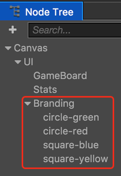
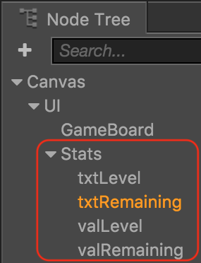

Creating more of the game play interface.
We need to create the rest of our game play interface. The goal here is to make this look like the game we planned at the beginning. Remember this picture:

We need to create more aspects of this to build up our game. Once we have the user interface elements laid out we can start to build logic and add code.
First, create another Sprite Node (Splash) and call it GameBoard. Give it an anchor point of 0.5 x 0.5, size of 490 x 750 and a position of 111 x -98. This will act as the area where the game play happens.
Second, let's add some place holders for statistics, like level, counts, etc. To do this, lets create another Sprite Node (Splash) as a child of our UI node and call it Stats. Give it an anchor point of 0.5 x 0.5, size of 200 x 600 and a position of -208 x -61.
Third, let's repeat the same concept as the above steps and make a third place holder to hold some sort of branding, possibly a logo or text. To do this, lets create another Sprite Node (Splash) as a child of our UI node and call it Branding. Give it an anchor point of 0.5 x 0.5, size of 155 x 155 and a position of -225 x 385. The
Sceneshould look like the following:Next, we can toss a few Sprites up in the Branding node. Just drag and drop them on to Branding node in theNode Tree panel.

Fifth, adjust the postion and size of each Sprite to achieve the look you wish. Example:
Sixth, we can add a few Labels to show statistics about the game. For now we can just add Level: and Remaining: labels. You do this the same was using the Node Library panel. Adjust the color, string, position, szie, etc of each to look how you wish. You will need two labels, one is the text and the second is the value we will show the user for each about their progress. The only requirement here is name your labels: txtLevel, txtRemaining, valLevel and valRemaining.
Design this how you wish. Your Node Tree should look like this:

Your UI could look look something like this example:

Now, let's move on to staring to write some code.
Task: Now is a good time to save your project! From the File menu, select Save Scene or use your operating system's shortcut key.